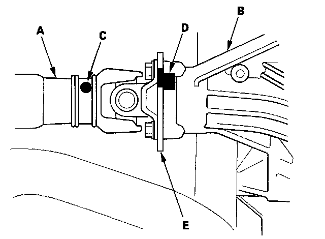

Propeller Shaft Installation
Propeller Shaft Installation1. If you are installing a new propeller shaft, go to step 2. If you reinstalling the original propeller shaft, go to step 3.
2. Install the new propeller shaft (A) onto the rear differential (B) by aligning the reference mark (C) on the new propeller shaft with the factory reference mark (D) on the companion flange (E). Do not use the marks you made on the companion from the removal procedure. If there are no factory marks on the companion flange, go to step 4.

3. Reinstall the No. 2 propeller shaft (A) to the rear differential (B) by aligning the reference marks (C) you made during the removal procedure.

4. Attach the No. 2 propeller shaft to the rear differential with new mounting bolts. Tighten the bolt to the specified torque.
5. Install the center support bearing mounting bolts. Make sure you use new bolts.
6. Install the No. 1 propeller shaft (A) onto the transfer companion flange (B) by aligning the reference mark (C). Make sure you use new mounting bolts.
7. Install the propeller shaft protector.
8. If you installed a new propeller shaft, test drive the vehicle at 55 mph (88 kPh) and check for noise or vibration.
^ If there is no noise or vibration, the repair is complete.
^ If there is a noise or vibration, go to step 9.
9. Remove the mounting bolts from the propeller shaft at the rear differential companion flange. Note the current alignment of the propeller shaft to rear differential companion flange.
10. Rotate the propeller shaft 180 degrees from its current alignment with the rear differential companion flange.
11. Install new mounting bolts and tighten them to the specified torque.